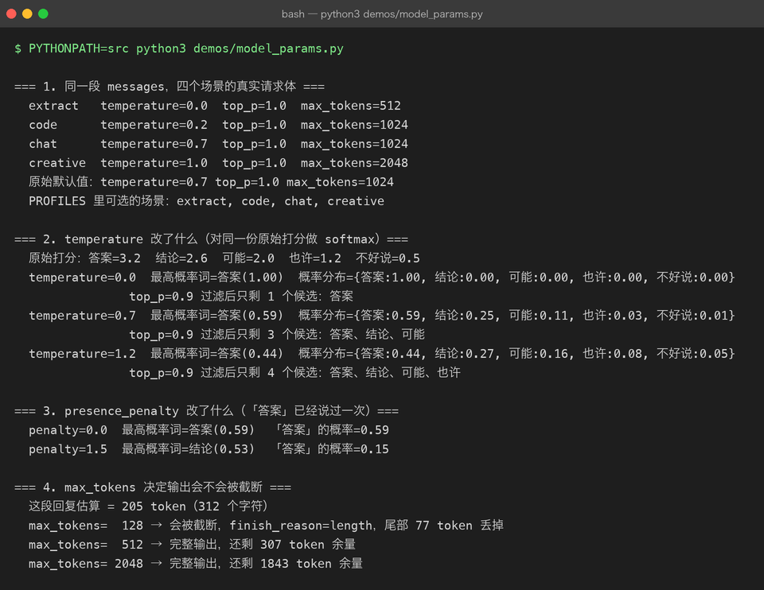
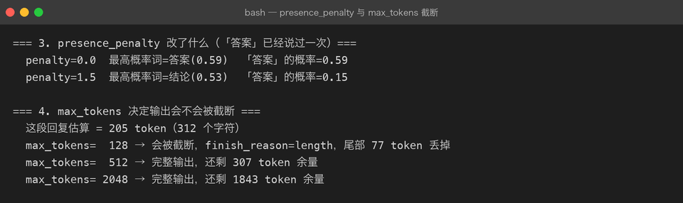

Project 03 — Chapter 06：Model Parameters【模型参数】
状态：✅ 已校对 对应代码：
src/assistant/settings.py
1. 项目要增加什么能力
目前的调用里，模型参数是写死的默认值：
payload = {
"model": "deepseek-chat",
"messages": messages,
}这意味着：所有场景用同一套口味。出题、抽取结构化数据、写诗、代码审查，全都一个温度。
本章目标：
理解每个参数到底控制了什么，并能按场景配置——而不是靠玄学调参。
2. 为什么需要这个知识
模型参数是 AI 应用唯一能直接控制输出质量分布的手段，而且成本极低（改一个数字而已）。
更实际的理由：参数用错会造成可复现的质量问题。
结构化抽取用了 temperature=1.0 → 字段偶尔乱飞，重试也救不回来
创意写作用了 temperature=0 → 三次生成的内容几乎一模一样
max_tokens 设太小 → JSON 被截断，解析必失败（Chapter 03 坑 3）3. 核心概念
3.1 六个常用参数
| 参数 | 控制什么 | 常见取值 | 不设会怎样 |
|---|---|---|---|
temperature | 采样温度：越高越发散 | 0 ~ 1.2 | 用服务端默认（通常 ~1.0） |
top_p | 核采样：只在累计概率前 p 的候选里选 | 0.7 ~ 0.95 | 默认 1.0（不限制） |
max_tokens | 本次最多生成多少 token | 视场景 | 默认可能很小，容易截断 |
presence_penalty | 出现过的话题再提的惩罚 | -2 ~ 2 | 默认 0 |
frequency_penalty | 同一个词重复出现的惩罚 | -2 ~ 2 | 默认 0 |
stop | 遇到什么字符串就停 | 自定义 | 不停 |
seed | 尽力复现（best effort） | 整数 | 每次不同 |
3.2 temperature 到底在改什么
模型每一步都在对词表算一个概率分布：
temperature = 0 → 几乎总是选概率最高的那个词（贪心）
temperature = 0.7 → 大体按概率走，偶尔选次优（自然）
temperature = 1.2 → 分布被拉平，冷门词也常被选中（发散/易跑偏）直觉：
temperature 是「惊喜程度」，不是「聪明程度」。 调高不会让模型变聪明，只会让它更敢选不太可能的词。
3.3 按场景选参数（这张表最有用）
| 场景 | temperature | top_p | 说明 |
|---|---|---|---|
| 结构化抽取 / 分类 | 0 ~ 0.2 | 1.0 | 要稳定，不要创意 |
| 信息问答 / 总结 | 0.3 ~ 0.5 | 0.9 | 准确为主 |
| 代码生成 / 审查 | 0.2 ~ 0.4 | 0.95 | 正确性优先 |
| 日常对话 | 0.6 ~ 0.8 | 0.95 | 自然 |
| 创意写作 / 头脑风暴 | 0.9 ~ 1.2 | 0.95 | 发散 |
3.4 不要同时乱调 temperature 和 top_p
两者都在改采样分布，同时调会互相干扰、难以复现。
推荐做法：只调 temperature，top_p 保持默认
或者只调 top_p，temperature 保持默认需要更强控制时再考虑 penalties。
3.5 参数应该进配置，不该散落在代码里
@dataclass(frozen=True)
class Settings:
model: str = "deepseek-chat"
temperature: float = 0.7
top_p: float = 1.0
max_tokens: int = 1024
# ...并且允许按场景覆盖：
PROFILES = {
"extract": {"temperature": 0.0, "max_tokens": 512},
"chat": {"temperature": 0.7, "max_tokens": 1024},
"creative": {"temperature": 1.0, "max_tokens": 2048},
}
def settings_for(profile: str) -> Settings:
return replace(base_settings, **PROFILES[profile])dataclasses.replace() 对 frozen dataclass 尤其好用——不改原对象，返回一个新对象。
4. 项目代码
src/assistant/
├── settings.py # Settings：temperature / top_p / max_tokens / PROFILES
├── client.py # payload 里带上全部参数
└── cli.py # --temperature / --profile 命令行覆盖请求体应该长这样：
payload = {
"model": s.model,
"messages": messages,
"temperature": s.temperature,
"top_p": s.top_p,
"max_tokens": s.max_tokens,
"stream": False,
}

5. Java ↔ Python 对比
| Java | Python | 说明 |
|---|---|---|
| 连接池参数调优（maxActive/timeout） | temperature / max_tokens | 都是「不改代码只改数值」的调优 |
@ConfigurationProperties | @dataclass(frozen=True) Settings | 同 |
Spring Profile（dev / prod） | PROFILES 字典 | 按场景切换配置 |
record 不可变 + withXxx() | dataclasses.replace() | 思路一致 |
Random(seed) | seed 参数 | Java 的 seed 是真复现，LLM 的只是尽力 |
-Dapp.temperature=0.2 | DEEPSEEK_TEMPERATURE=0.2 | 外部化配置的两种方式 |
一个值得记住的差异：
Java 里
Random(42)一定复现；LLM 的seed只是「尽力复现」。 因为推理涉及浮点并行计算与服务端批处理，同样的 seed 也可能有细微差异。别把它当单元测试的确定性保障。
6. 常见坑
坑 1：把 temperature 当成「聪明程度」
❌ 「模型答得不好，把 temperature 调到 1.5 试试」
✅ 答得不好应该改 Prompt / 补上下文 / 换模型坑 2：结构化输出用高温
Chapter 03 的抽取场景，temperature 应该接近 0。用 0.9 会让字段名、类型时不时跑偏——而且这种偶发失败最难排查。
坑 3：max_tokens 太小导致截断
最隐蔽的一个：输出被截断 → JSON 不完整 → json.loads 失败 → 你以为是模型的错，其实是自己的配置。
自查方式：检查响应里的 finish_reason：
if choice.get("finish_reason") == "length":
logger.warning("输出被 max_tokens 截断，考虑调大")坑 4：以为 seed 能保证可复现
见 5 的差异说明。测试里不要依赖它。
坑 5：参数散落在各处
# ❌ 到处硬编码
await client.chat(messages, temperature=0.2) # 这里 0.2
await client.chat(messages, temperature=0.9) # 那里 0.9统一进 Settings + PROFILES，调用方只说「我要 extract 场景」。
坑 6：忽略 top_p 与 temperature 的相互作用
两个都设成很激进的值（如 temp=1.2 + top_p=0.5），输出质量会明显下降且难以预测。
7. 实战挑战
挑战 1：给 Settings 加 temperature / top_p / max_tokens，并支持 PROFILES 场景切换。
挑战 2：写一个对比脚本：同一 Prompt，temperature 取 0 / 0.7 / 1.2 各跑一次，把输出并排打印出来，观察差异。
挑战 3（进阶）：在日志里记录每次调用的实际参数与 finish_reason，一旦发现 finish_reason == "length" 就打 WARNING。
8. 主动回忆
- temperature 到底改变了什么？它是「聪明程度」吗？
- 结构化抽取场景应该用什么温度？为什么？
- 为什么不建议同时调 temperature 和 top_p？
max_tokens太小的典型症状是什么？怎么自查？- 为什么 LLM 的
seed不能像 Java 的Random(seed)那样保证复现？ - 参数应该放在哪里？散落在调用点有什么问题？
9. 本节完成标准
- [ ]
Settings里有 temperature / top_p / max_tokens，可从环境变量覆盖 - [ ] 有至少两个场景 PROFILE（extract / chat）
- [ ] 请求体带上了全部参数，日志能打印实际值
- [ ] 能识别
finish_reason == "length"并告警 - [ ] 真实跑过 temperature 对比实验，看到过差异
上一章：05-conversation-memory.md 下一章：07-token-context-window.md —— 算清楚钱花在哪。